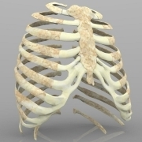

COVID-19: Keep reading, keep learning about all this
Nooooooooooooo 😭🤬🤮🤯😭🤥🤢
Okay..I
do apologize for that little emoji tantrum 😀
But I have to say, that prion theory really is 💩 👎🏼
https://www.acsh.org/news/2021/02/19/no-covid-mrna-vaccine-won't-cause-alzheimers-or-prion-disease-15357
https://www.politifact.com/factchecks/2021/feb/26/j-bart-classen/coronavirus-vaccine-doesnt-cause-alzheimers-als/
https://en.wikipedia.org/wiki/J._Bart_Classen
https://sciencebasedmedicine.org/can-mrna-based-covid-19-vaccines-cause-prion-disease/
The last one is slightly longer than the others, but please take the time to read it if you have five minutes to spare.I think it’s worth your time.But I’m admittedly partial.It’s one of my favorite blogs.Saves me so much time, not having to make the long arguments myself.I love that someone has taken the time to make a cogent argument.
(As a general piece of advice 🙂,
always consider the sources of information.Of course that includes my sources 😋).
Posted On: 2021-05-25T00:00:00
Posted By: macawake
Dr. J.Bart Classen MD is a well known Antivax immunologist.
Quote A widely-reposted 2021 facebook post claiming that the mRNA vaccines against COVID-19 could cause prion diseases was based on a paper by Classen.The paper 'COVID-19 RNA based vaccines and the risk of prion disease' was published in Microbiology and Infectious Diseases, whose publisher, Scivision Publishers, is included in Beall's list of publishers of predatory journals.Vincent Racaniello, professor of Microbiology and immunology at Columbia University, described the claim as 'completely wrong'.[1][6][7] Tulane University virologist Robert Garry stated that Classen has offered no evidence for the three pillars of his argument: that the sequence overlaps between the Pfizer vaccine are greater than occur with any randomly-selected stretch of RNA, or that the vaccine could cause zinc to be released and that doing so would affect its purported targets as he proposes https://en.wikipedia.org/wiki/J._Bart_Classen
Further info:
COVID-19 vaccines, prion disease, and Alzheimer’s: Another old antivax lie is new again
Quote Antivax immunologist J.Bart Classen recently published a paper claiming that mRNA-based COVID-19 vaccines can cause prion disease leading to neurodegenerative diseases like Alzheimer’s dementia.What are prions, and can these vaccines cause prion disease?Unsurprisingly, Classen is just wildly speculating based on highly implausible biology........What are prions?Prion diseases are more properly referred to as transmissible spongiform encephalopathies (TSEs) and represent a rare form of progressive neurodegenerative disorders that can affect both humans and animals.The most famous prion diseases in animals are bovine spongiform encephalopathy (BSE, also known as 'Mad Cow Disease'), scrapie, and chronic wasting disease; in humans, Creutzfeldt-Jakob Disease (CJD) and kuru.These diseases have a long incubation period and produce in the brain characteristic spongiform changes associated with loss of neurons with no inflammatory response.The causative agents for these diseases are prions.According to the CDC: The term 'prions' refers to abnormal, pathogenic agents that are transmissible and are able to induce abnormal folding of specific normal cellular proteins called prion proteins that are found most abundantly in the brain.The functions of these normal prion proteins are still not completely understood.The abnormal folding of the prion proteins leads to brain damage and the characteristic signs and symptoms of the disease.Prion diseases are usually rapidly progressive and always fatal.......So, basically, although the claim that vaccines could transmit prions entered the antivaccine lexicon of disinformation in the 1990s, after billions upon billions of doses of vaccines for which the viral stock was grown in FBS-containing media, there remains no good evidence that vaccines have ever been contaminated with prions or ever caused a single case of prion disease in humans or animals....
Posted On: 2021-05-26T00:00:00
Posted By: NRSKarenRN, BSN
17 hours ago, Floor_Nurse said: Some of the info floating around there isn't proven (or just plain quackery), while other info is worth looking into.
Was this meant to be ironic, or did it just end up that way.
If you were to ask 100 experts in this field to put together a small list of quacks, how many times would this guy make the top 5?
Posted On: 2021-05-26T00:00:00
Posted By: hherrn
23 hours ago, Floor_Nurse said: There are many doctors researchers stating things that are contrary to the 'It's perfectly safe' theory.
This sentence is pretty much always the red flag that says, '[sounds like 'wool shirt'] coming right up!'
Many people are saying all kinds of nonsense.The link to the article by the well-known antivaxxer was nonfunctional on my tablet this morning, but his reputation precedes him.
Posted On: 2021-05-26T00:00:00
Posted By: Hannahbanana, BSN
https://www.npr.org/2021/05/13/996570855/disinformation-dozen-test-facebooks-twitters-ability-to-curb-vaccine-hoaxes/
A report from NPR on the 'Dirty Dozen' of 12 posters responsible for the vast bulk of disinformation about covid vaccines in facebook.With links and other information.
Posted On: 2021-05-26T00:00:00
Posted By: Hannahbanana, BSN
On 5/25/2021 at 12:54 PM, Floor_Nurse said: There are many doctors researchers stating things that are contrary to the 'It's perfectly safe' theory.
Curious-
Which medical experts are promoting a 'perfectly safe' theory?
From what I have read, like any medical treatment or procedure, there are risks and benefits, and the overwhelming consensus among experts is that the benefits outweigh the risks.
Do you have any sources considered credible that are saying this, or any vaccine, is perfectly safe?
Posted On: 2021-05-27T00:00:00
Posted By: hherrn
On 5/26/2021 at 12:29 PM, Hannahbanana said: https://www.npr.org/2021/05/13/996570855/disinformation-dozen-test-facebooks-twitters-ability-to-curb-vaccine-hoaxes/ A report from NPR on the 'Dirty Dozen' of 12 posters responsible for the vast bulk of disinformation about covid vaccines in facebook.With links and other information.
facebook has proved itself little more than a 'party propaganda' tool where only opinions supported by the 'dominant mainstream' are deemed worthy and where the First Amendment is virtually made a laughing stock of.
Posted On: 2021-05-31T00:00:00
Posted By: myoglobin, ASN, BSN
Sure, and that’s why they’re such a widely-acknowledged target for Russian-origin disinformation, because they are part of the dominant mainstream media making mock of the first amendment (which doesn’t mean what you think it does).Gotcha.
Posted On: 2021-05-31T00:00:00
Posted By: Hannahbanana, BSN
1 hour ago, myoglobin said: facebook has proved itself little more than a 'party propaganda' tool where only opinions supported by the 'dominant mainstream' are deemed worthy and where the First Amendment is virtually made a laughing stock of.
Written like someone who has fallen down too many social media rabbit holes relative to covid and the vaccines.
Posted On: 2021-06-01T00:00:00
Posted By: toomuchbaloney
48 minutes ago, toomuchbaloney said: Written like someone who has fallen down too many social media rabbit holes relative to covid and the vaccines.
I don't believe that I have ever read anything pro or con on vaccines on social media.I have never sent a tweet or used Instagram.I only use facebook maybe once a month it to say 'hey' to an old friend or associate.However, I believe that social media is a 'public accomodation' and in the same way that a restaurant in the South may have segregated under 'Jim Crow' laws denying people of color their rights under the 14th Amendment (equal protection clause and interstate commerce clause as in the case of Boynton vs Virginia https://en.wikipedia.org/wiki/Boynton_v._Virginia ) that social media who censor deny Americans their rights under the 1st Amendment.Social media is the modern 'town center' and gets the benefit of 'monopoly like' powers and should have to protect freedom of expression for even perspectives with which they may disagree.
Edited Jun 1 by myoglobin clarity
Posted On: 1948-06-01T00:00:00
Posted By: myoglobin, ASN, BSN
30 minutes ago, myoglobin said: I don't believe that I have ever read anything pro or con on vaccines on social media.I have never sent a tweet or used Instagram.I only use facebook maybe once a month it to say 'hey' to an old friend or associate.However, I believe that social media is a 'public accomodation' and in the same way that a restaurant in the South may have segregated under 'Jim Crow' laws denying people of color their rights under the 14th Amendment (equal protection clause and interstate commerce clause as in the case of Boynton vs Virginia https://en.wikipedia.org/wiki/Boynton_v._Virginia ) that social media who censor deny Americans their rights under the 1st Amendment.Social media is the modern 'town center' and gets the benefit of 'monopoly like' powers and should have to protect freedom of expression for even perspectives with which they may disagree.
Sure.
Apparently you don't understand private business versus 'town centers' either.Social media is privately run for profit.
Posted On: 1930-06-01T00:00:00
Posted By: toomuchbaloney

Content Date: 2021-05-25
Download Date: 2021-09-16
Document ID: L0C04G86O